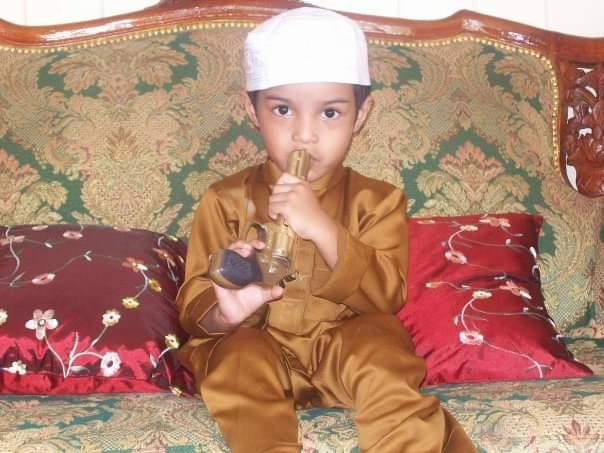
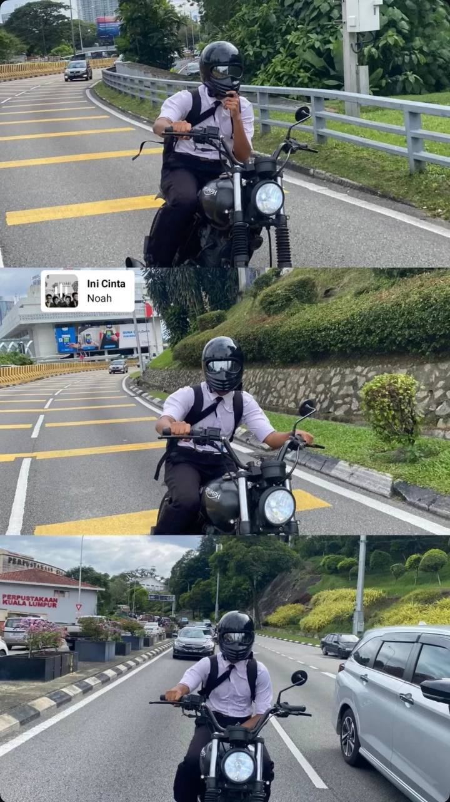
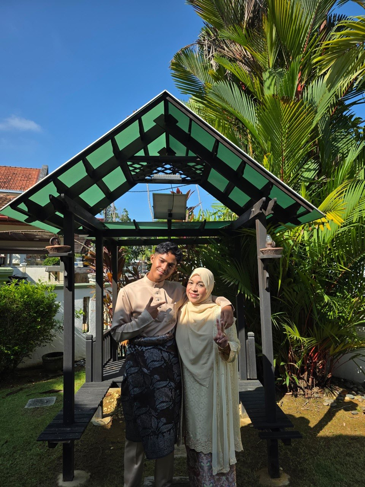
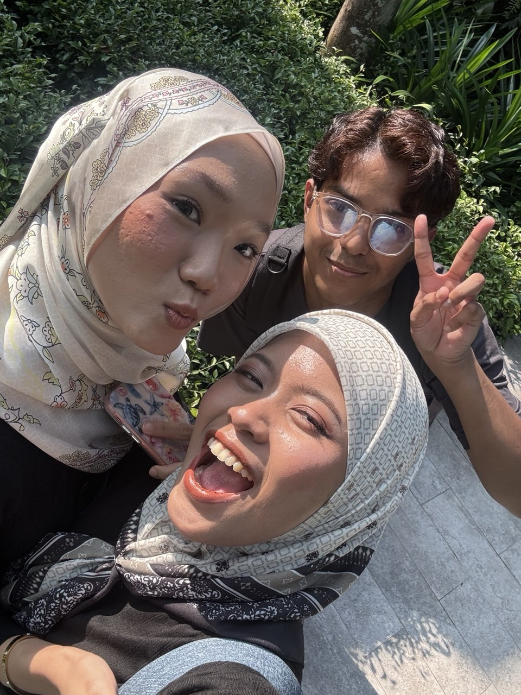
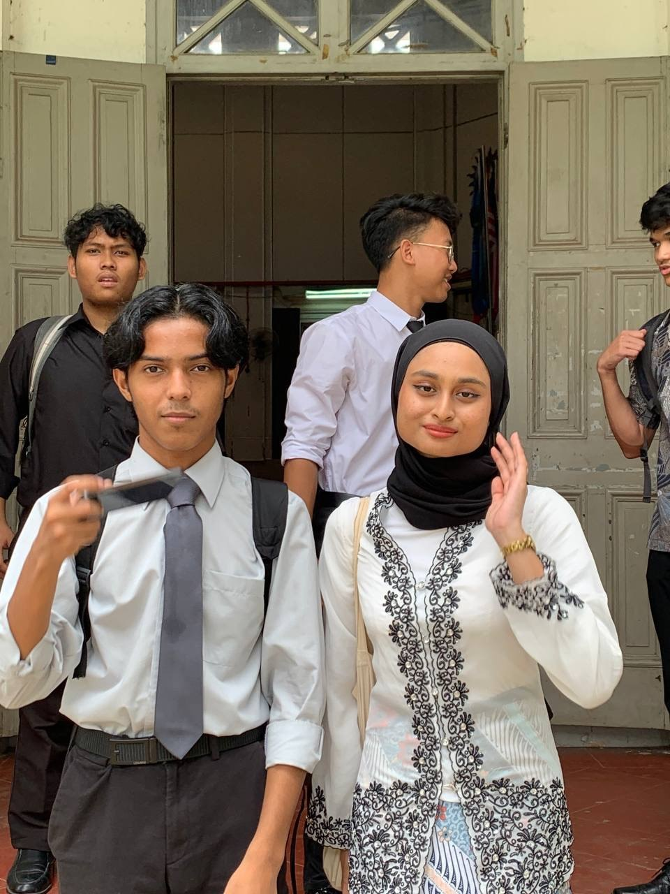
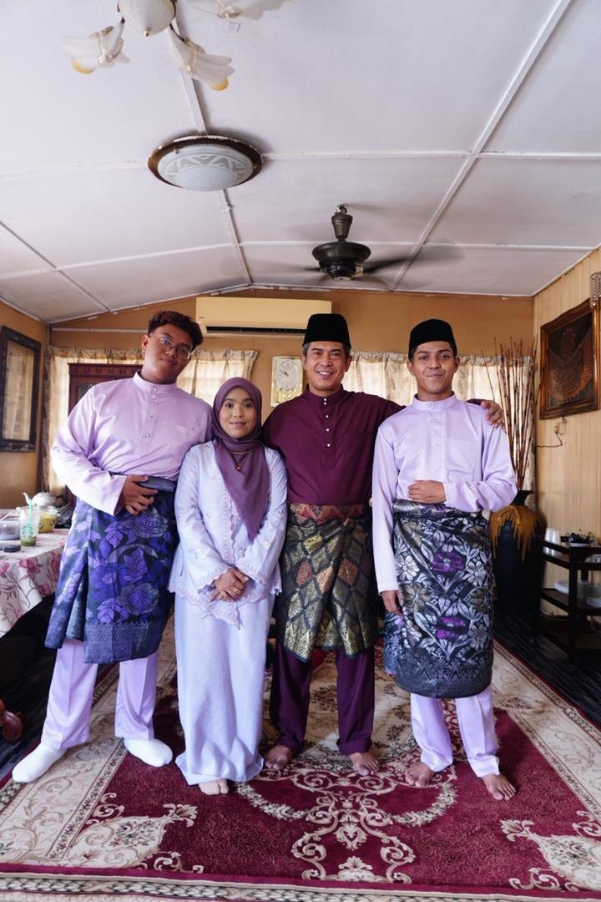
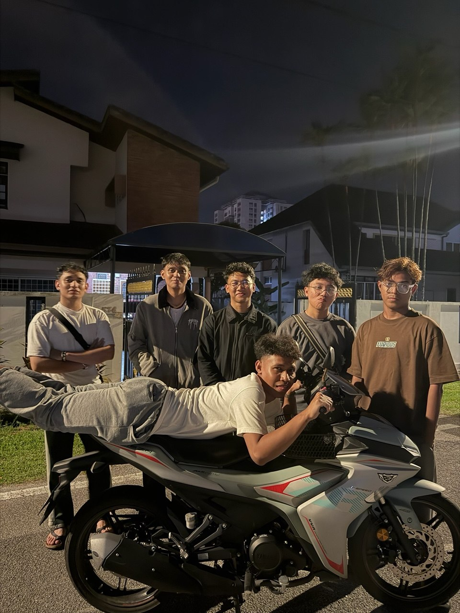
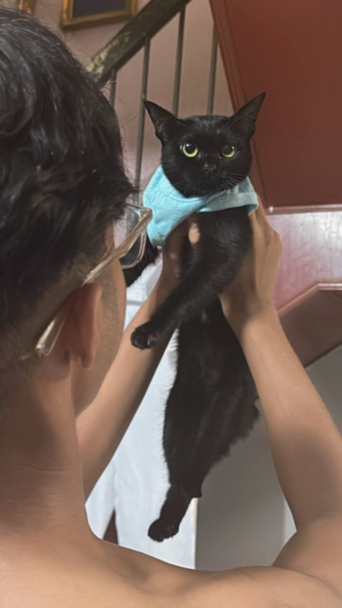

Every photo in this gallery holds a moment that time tried to erase, but my soul chose to remember

Mini me - Behind those innocent eyes was a soul already learning how cold the world could be — a small child smiling softly while carrying shadows nobody could see.

The engine screams louder than my thoughts, and every midnight ride feels like escaping a life that never truly felt like home.

Beside her, I still become the little kid who forgot how heavy life really is — because a mother’s presence is the only place darkness never wins.
Through every chaos, every sleepless night, and every silent battle, Rian stayed — not as someone who saved me, but as someone who never left when the world slowly did.

They know the version of me hidden behind the fake smiles and late-night silence — the two souls I trust with stories I could never tell the world.

My first love was never meant to stay forever — she arrived softly, changed the way my heart worked, then left scars that still echo in every quiet night.

Blood made us family, but pain and memories made us unbreakable — my siblings and my father, the only people who truly witnessed the storms behind my silence

Sanpeng — six broken souls tied together by chaos, loyalty, and nights full of stories the world was never meant to hear

Even in my darkest nights, my cat stayed beside me quietly — a small soul with gentle eyes, healing wounds the world never noticed.